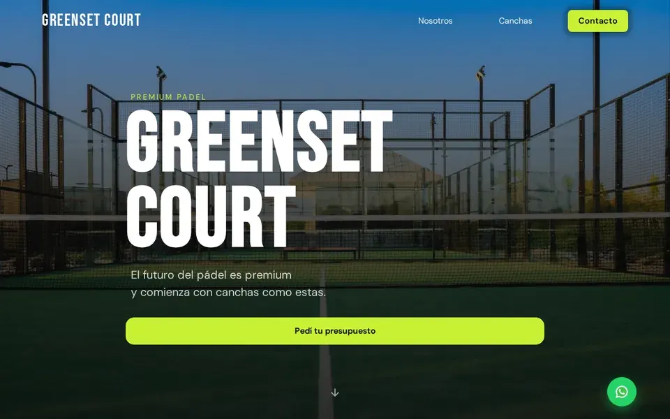
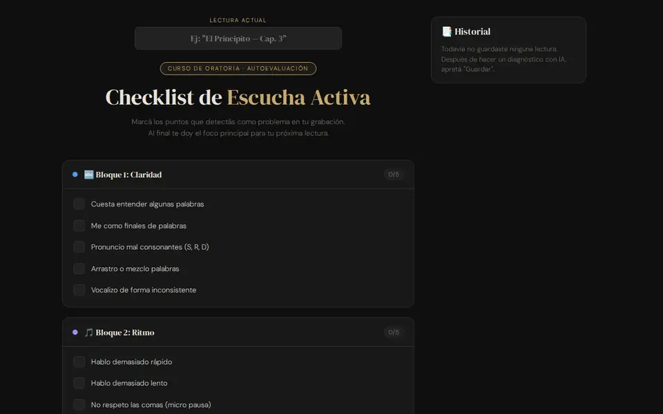
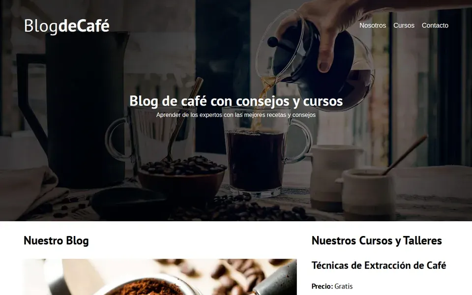
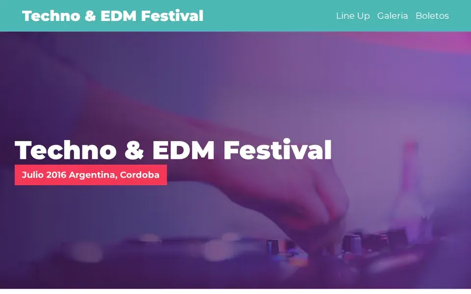

Sebastián — Web Developer · Frontend · Performance — Fernandez
+2 años construyendo sitios de producción desde Córdoba, Argentina: responsivos, performantes y accesibles. Sin plantillas. Sin frameworks innecesarios.
- +2 años
- 90+ Lighthouse
- 4 proyectos live
Construyo sitios que cargan rápido, se entienden fácil y funcionan para todas las personas. Performance, accesibilidad y semántica no son extras: son el estándar.
01 — Trabajo seleccionado ↓

Greenset
Court
Empresa de canchas de pádel sin presencia digital que necesitaba capturar leads calificados antes de su lanzamiento. Formulario que califica por tipo de proyecto y envía directo a WhatsApp — sin backend. Contadores animados con Intersection Observer, WebP, mobile-first.
Hoy: en producción con mantenimiento continuo.

Checklist
de Oratoria
Herramienta propia para registrar consistencia en ejercicios de hablar en público. Estado que persiste entre sesiones sin backend, checklist interactiva, responsiva y accesible — JavaScript puro, cero frameworks.

Blog
de Café
Blog educativo de 5 páginas con listado de cursos, entradas y validación de formulario en JS puro. Arquitectura multi-página y manipulación del DOM sin librerías externas.

Festival
de Música
Landing de alto impacto para un festival EDM en Argentina: video background, grilla de lineup de 2 días y 2 escenarios, galería y tickets en cards. SASS en partials, WebP y lazy loading.
02 — Con qué trabajo ↓
Skills
Lenguajes
- HTML5 semántico
- CSS3 / SASS
- JavaScript ES6+
- PHP
- SQL
JavaScript
- DOM Manipulation
- LocalStorage
- Intersection Observer
- WhatsApp API
- Validación de formularios
Performance
- Core Web Vitals
- Lighthouse audits
- WebP y compresión
- Lazy loading
- Mobile-first
Accesibilidad
- WCAG 2.1 / 2.2 AA
- ARIA y semántica
- Navegación por teclado
- SEO On-Page
- Meta tags
Herramientas
- Git · GitHub
- Vercel / Netlify
- Figma
- Chrome DevTools
- Responsively
En formación
- React
- Node.js
- REST APIs
- MongoDB
- Desarrollo con IA
Dic. 2024 — Presente · Freelance
Web Developer independiente
- Sitios responsivos, landings y e-commerce deployados en producción.
- WebP, lazy loading y auditorías Lighthouse en cada proyecto.
- WCAG 2.1, ARIA, semántica HTML5 y cross-browser como estándar.
- Git/GitHub con CI/CD en Vercel y Netlify; diseños desde Figma.